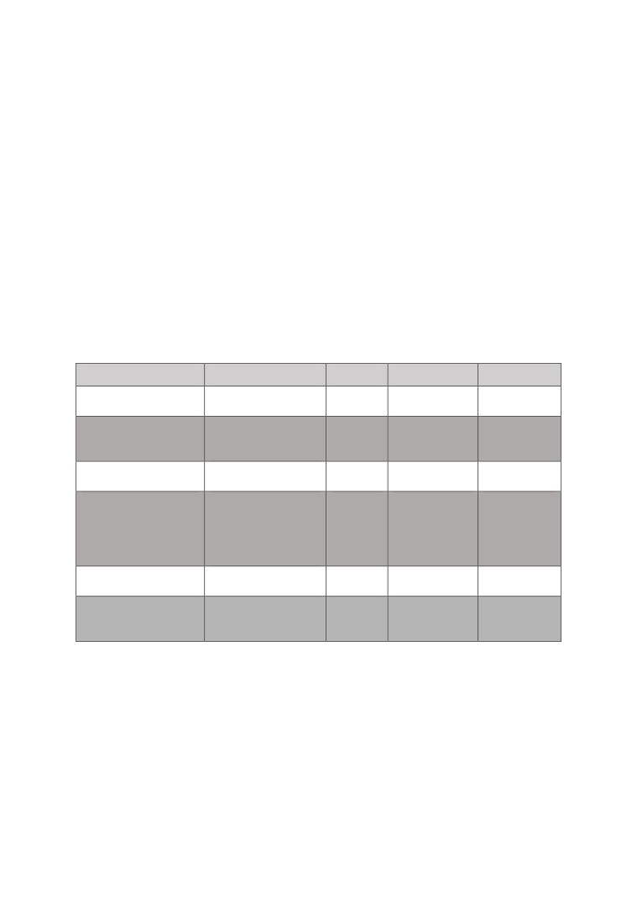
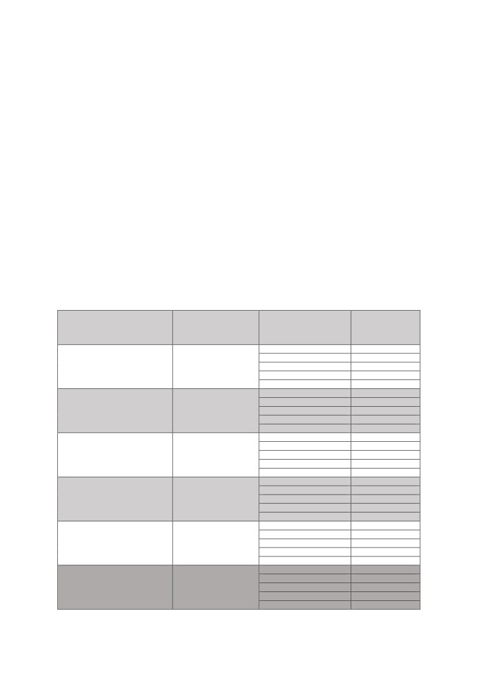
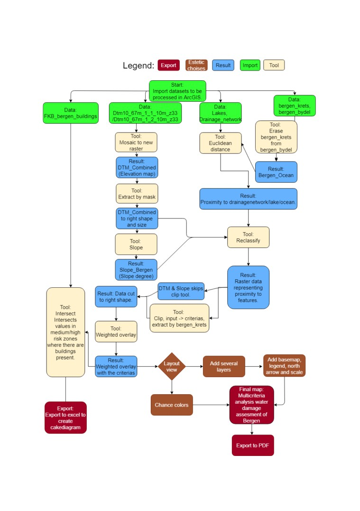
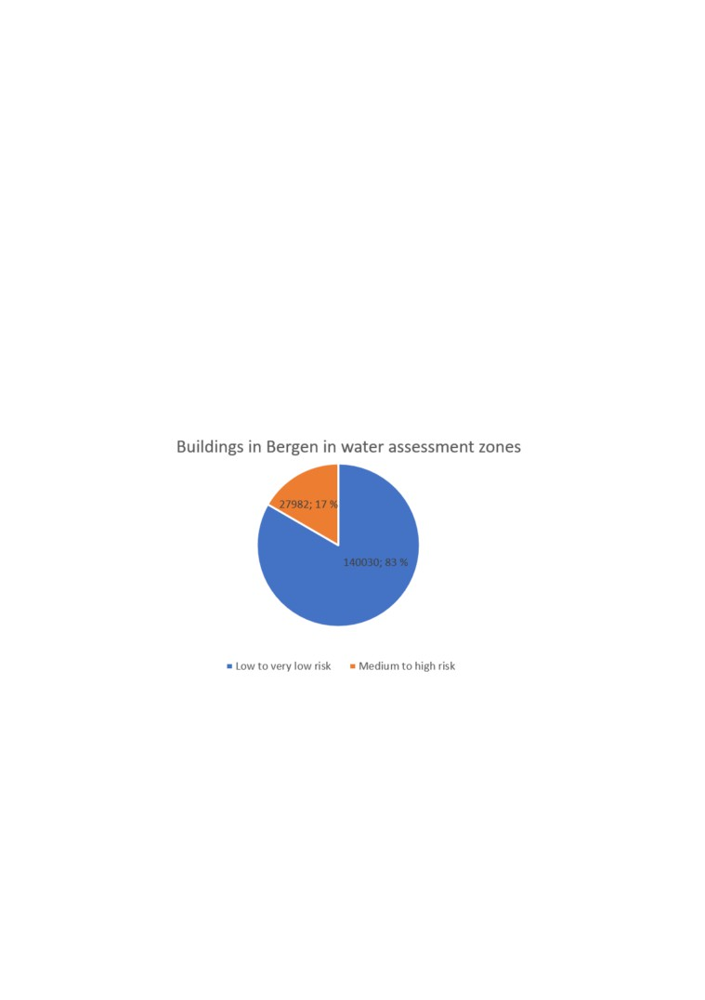
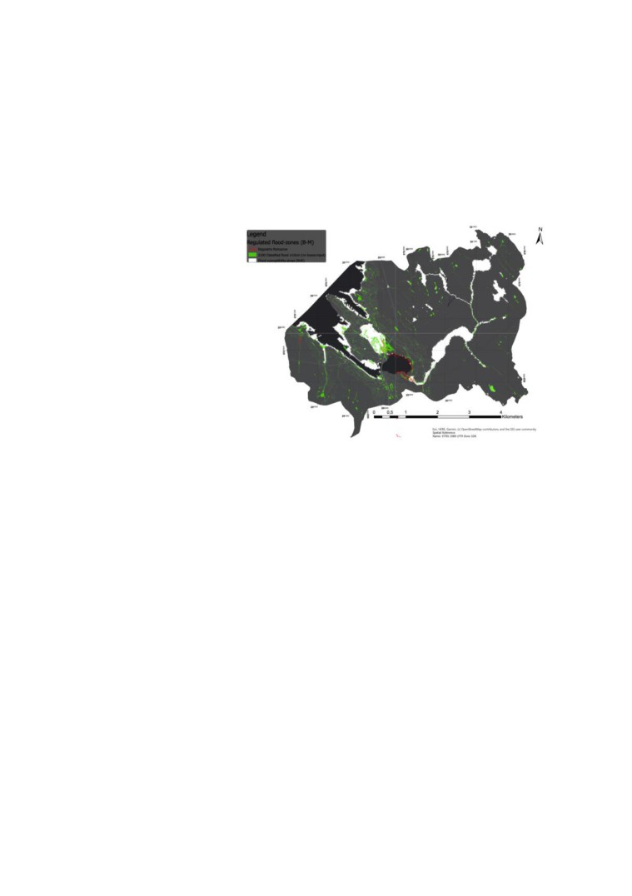
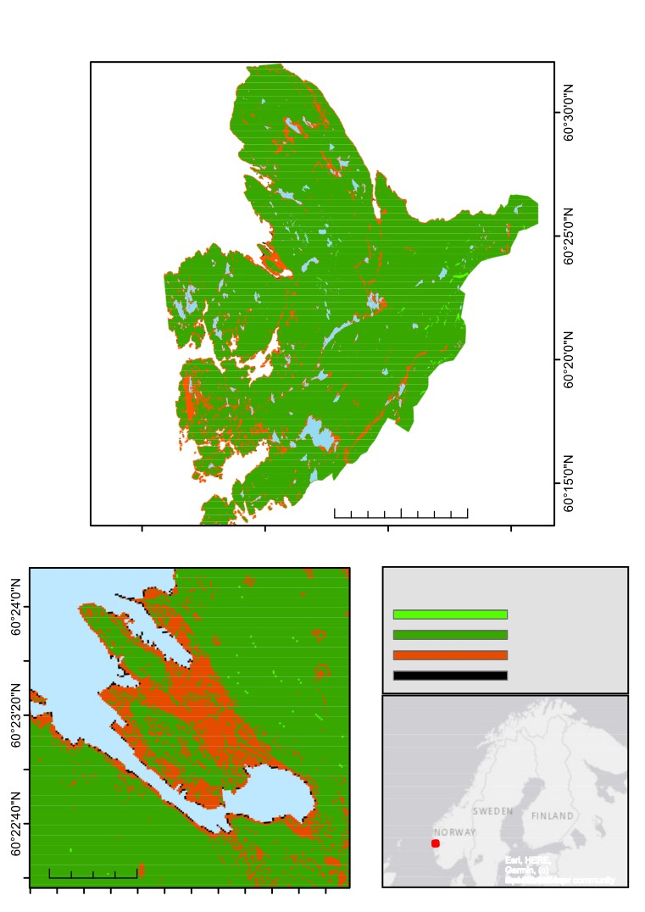

A multi-criteria water damage assessment of Bergen
20.11.2020
1
1. Introduction:
The muncipality of Bergen is located on the West
Coast of Norway. The West Coast receives the
most rain out of all places in Norway because of
the western winds. These winds carry clouds that
are lifted higher because of the mountainous
landscape causing orographic rainfall. This process
causes Bergen to receive a lot of rain during a year.
Figure 1: «Bryggen i Bergen sommeren
On average between 1981 and 2018, there was
2008.» (Vabø, 2008).
2511mm of rain per year in Bergen (Bergen
Kommune, u.d).
Rainfall, coastal floods, and river flooding can impact human infrastructure and cause damage
to buildings, which can be costly. With this, to create a multi-criteria water damage risk
assessment will be attempted. Several factors can impact water accumulation, which causes
water damage, this includes but is not limited to proximity to sea/lakes/drainage
network/infrastructure and elevation/slope. The water damage assessment can be a tool for
decision-makers to mitigate damage by opting to not build in zones with a high possibility of
water accumulation or to do the necessary steps to prevent the damage. CICERO research
estimated that damage done by flooding is costing the Norwegian society between 1,6-3,6
billion NOK each year. In 2017 alone, flooding related insurance payouts was 438 million
NOK (Alnes et al., 2018). Outer process damage done by water counted 14 748 occurrences
in Norway in the first three quarters of 2019 (Mathisen, 2019). With this, increased awareness
of outer water damage factors can save the Norwegian society a lot in terms of money. Within
the water damage assessment, different factors will be weighted using the weighted overlay
tool in ArcGIS. A multi-criteria analysis of water damage in the municipality of Bergen will
be done. The criteria’s included in the weighted overlay analysis will be proximity to
lake/ocean/infrastructure/drainage-network and slope/elevation.
2

2. Methodology:
2.1 Data sources:
To be able to answer the task at hand several datasets had to be acquired from different
sources. Sources include data from labs, kartverket.no and geonorge.no. The data can be seen
as described in Table 1. The data was used to match criteria for water accumulation outlined
in the papers reviewed. Some of the datasets had different coordinate systems when being
imported into ArcGIS, this was fixed by a conversion within the program to make all data
match the correct format. The coordinate system that was used was WGS 1984 UTM Zone
32N.
Table 1: A table outlining the name, usage, datatype, acquired date and source of the different
datasets used to make the multicriteria flooding susceptibility map of Bergen.
Name
Usage
Datatype
Acquired:
Source
Dtm10_67m_1_1_10m_z33/
Used to create an elevation map
Raster
08.09.2020
Kartverket.no
Dtm10_67m_1_2_10m_z33
and slope angle of Bergen.
Bergen_krets
Used to clip the datasets to
Vector shape
Acquired from data
Acquired from data
correct size and shape. Also
file
lab.
lab.
used to outline the ocean.
FKB_Bergen_buildings
Used to calculate distance from
Vector shape
09.11.2020
Geonorge.no
infrastructure in Bergen.
file.
Lakes
Outline waterbodies in the form
Vector shape
Acquired from data
Acquired from data
of lakes, to not be interpreted in
file.
lab.
lab.
the result. Also used to
calculate proximity to lakes in
terms of lakes being overflown.
Drainage_network
Used to calculate distance from
Vector shape
Acquired from data
Acquired from data
drainage network.
file.
lab 7
lab 7
Bergen_Bydel
Used to clip bergen_krets into a
Vector shape
Acquired from data
Acquired from data
feature that represents the
file.
lab.
lab.
ocean surrounding Bergen.
2.2 Weighting of criteria:
Proximity to the ocean:
The proximity to the ocean is an important part of assessing water damage. This has to do
with coastal flooding. Coastal flooding happens when there are waves, tides, storm surges or
heavy rainfall that exceeds the regular amount of water carried through these processes.
Bergen has been a victim of coastal flooding before, which makes proximity to ocean vital in
assessing water damage. In Figure 1 a picture of high-water level can be seen as a great part
3
of Bryggen is underwater. This criterion was weighted at 35% because of the number of
occurrences where this has happened in the past (Centre for Disease Control and Prevention,
2017).
Elevation:
The elevation of the study area is important for assessing water damage.
Bergen is an area that has a rapid increase in elevation from the ocean and inwards into the
land. This criterion was evaluated at 10% weighting because of its correlation to the
proximity to the ocean and the slope angle.
Slope:
The slope of an area is one of the most important factors when it comes to flooding and water
accumulation. For water to be able to accumulate or create a flood, the water must move into
the area faster than it is drained. Jati, Suroso & Santoso (2019) outlined in their article about
flood analysis that flooding most frequently occurs where there is a slope angle of 0-10
degrees (Jati, Suroso & Santoso 2019).
Chapi et al., (2017) also agreed with Jati, Suroso & Santoso (2019) It was stated that an area
with a low slope angle is more prone to water accumulation and flooding due to high
infiltration and low velocity of the water. An area with a high slope angle is less prone due to
high velocity because of gravity and low infiltration rate of water. It is also important that the
angle in the multicriteria analysis must start low with frequent intervals then it is possible to
widen the intervals as the slope degree gets higher. This is to catch the most crucial slope
angles of the dataset and imply the water accumulation risk correctly (Chapi et al., 2017).
The slope angle in this multicriteria evaluation was set to represent 20% with different
intervals regarding the literature outlined above. The categories represent areas where there is
a high to a low chance of flooding.
Proximity to the drainage system:
The proximity to the drainage system is important as the drainage system often follows the
topography into lakes and then further down to the ocean. When rainfall exceeds normal
amounts, the drainage system will carry more water making the water flow bigger. The
4
drainage system criterion was set to weight 10% of the multicriteria evaluation because of its
correlation to lakes, elevation, slope, and ocean.
Proximity to lake
The proximity to lakes is important as water often is carried to lakes. If this amount exceeds
the regular amount received the lakes will grow size. The area around the lake may then be a
subject to damage by water if there are buildings present. This criterion was set to weigh 10%
as when lakes get bigger inflow, they usually proceed by providing greater outflow of water.
Proximity to infrastructure:
The proximity to infrastructure is an important criterion to evaluate how water accumulates.
Urban areas have less infiltration of water in the ground compare to non-urban areas. This
criterion can be correlated to elevation and proximity to the ocean because of human
settlements often being placed in flat areas where there is proximity to the ocean. This has
been proved to be true studying where early settlers established their societies through time
(Yang & Zhang, 2011).
This criterion has been set to 10%. It is an important criterion but since it heavy correlates
with slope, elevation, and ocean proximity it will be weighted less since these criteria are
present in the assessment.
2.3 Tools used, See in combination with flowchart (Figure 2, Page 8):
Mosaic to new raster:
The digital elevation map (DEM) acquired from kartverket.no was delivered as two files to
represent the municipality of Bergen. With this, a combined DEM was required to make the
processing easier only having to do single operations on the DEM model. With this mosaic to
new raster was used to combine the two files. This merged the files to make a single file.
Extract by mask:
The digital elevation map was a square that did not represent the total land coverage of the
municipality of Bergen. With this to cut it to the correct size and shape extract by mask was
5
used. The input used was the DEM created from mosaic to new raster, then it was shaped by
the input “Bergen_krets”.
Slope:
The slope tool was used to calculate the angle of slope in the Bergen area using the DEM
dataset. The slope tool works by identifying the steepness in a raster cell and providing a
value that represents if the slope is steep or not.
Erase:
To be able to find out the extent of the ocean. Bergen_bydel was erased with the use of
Bergen_krets. This created a polygon that represented the area of the ocean. Euclidean
distance was then used to establish proximal values to the ocean.
Euclidean Distance tool:
The Euclidean distance tool is a tool that is used to measure the distance from an input. In the
case of assessing water damage-prone areas in Bergen, it was used to measure the distance
from buildings, lakes, the ocean, and the drainage network of Bergen. Here values were
assigned depending on the distance from the features. Values were assigned to the whole of
Bergen to be able to provide inputs for the total coverage, which later gives values to
everything when doing reclassification.
Clip:
When doing Euclidean distance from features it produced a square that covered more than the
extent of the municipality of Bergen. Since values in the ocean and outside the extent of
Bergen are unnecessary. The clip tool was used to cut the distance raster’s to the correct size
and shape.
Reclassify:
Reclassify had to be used before the weighted overlay tool could be used. It was used on the
raster datasets to assign values to the different areas in the assessment. Distance from
infrastructure/lake/ocean/drainage network and slope/elevation was performed
reclassifications on. The values created raster datasets that contained 5 rows equal to the
distance and elevation values. For example, all raster values that were less than 10m from the
ocean was assigned to one row.
6

Intersect:
Intersect was used to find how the buildings in FKB_Bergen_bygninger intersected with the
result from the weighted overlay. The number of buildings in each zone was then exported to
excel to create a piechart representing buildings in medium/high-risk zones.
Weighted Overlay:
Using the weighted overlay tool, it was used to assign a different weighting to different
datasets. A percentage of importance was set on each dataset and the elements within the
dataset where assigned a value from 1-5 based on importance. See Table 2. for the different
weightings used in the analysis.
Table 2: A table showing the percent assigned to each element in the multi criteria water
damage assessment. Each weighting was based on the information obtained from
reviewing literature described in 2.2 weighting of criteria.
Name:
Percent of weight:
Importance (5
Values:
highest, 1 lowest):
5
0m - 10m
Proximity to ocean
35%
4
10m - 20m
3
20m - 30m
2
30m - 40m
1
>40m
5
0m - 10m
Elevation
10%
4
10m - 100m
3
100m - 250m
2
250m - 500m
1
>500m
5
1° - 5°
Slope angle
20%
4
5° - 10°
3
10° - 20°
2
20° - 45°
1
45° - 90°
5
0m - 10m
Proximity to infrastructure
10%
4
10m - 20m
3
20m - 30m
2
30m- 40m
1
>40m
5
0m - 10m
Proximity to drainage
10%
4
10m - 20m
3
20m - 30m
network
2
30m- 40m
1
>40m
5
0m - 10m
Proximity to lakes
15%
4
10m - 20m
3
20m - 30m
2
30m- 40m
1
>40m
7

2.4 Flowchart of processes outlined in the assessment:
Figure 2: Flowchart outlining the ArcGIS steps done in assessment.
8
3. Results:
8
Figure 3: Data used in the weighted overlay.
9

The final map (page 13) provided a graded water damage assessment into 4 groups based on
the risk associated with different areas in Bergen. These groups were: extremely low risk,
very low risk, medium risk, and high risk. The majority of total coverage showed a risk-
evaluation rated at low risk. Bergen city centre showed the majority of high-risk/medium-risk
raster cells.
In figure 3 the input data that was applied in the weighted overlay can be seen. These inputs
created the final map which can be seen on page 13. The final map is heavily correlated with
the proximity to ocean and slope angle as these criteria where weighted the heaviest.
The amount of building in high risk and medium risk zones were calculated using excel. This
showed that 17% of buildings in Bergen were present in areas where water damage
assessment was high or medium.
Figure 4: Buildings in Bergen in different water assessment zones.
10

4. Discussion:
Eiknes (2020) made a flood susceptibility map of the Bergen city centre. If we compare the
results from the final map produced with the one Eiknes made (Figure 5), these share some
similarities. Most of the centre of Bergen falls under flood susceptibility areas in both maps
and proximity to the ocean seems to be the most important correlation between them. The
map by Eiknes acts as a
validation of the final map
produced (Eiknes, 2020).
In the results part, it was
outlined the percentage of
buildings that were present in
areas where there was a high
to medium risk of water
damage. However, since
buildings impacted water
Figure 5: Flood area zones in Bergen centre (Eiknes, 2020).
infiltration levels and are a
criterion of the weighted overlay it is important to note that this may have affected the results
and that if this weighting is not accurate that buildings present in these risk zones may be
incorrect. The data contains some errors that are both human and computer processed. In
terms of human errors there is a great chance of there being some errors when mapping. There
may as well be errors in the weighting of the final map, which affects the final map.
Transforming data to raster or from raster greatly reduces the resolution of the datasets, which
affects the final map. Another thing to consider is the resolution in the different datasets
obtained. If unlimited time for processing was given, greater resolution datasets would be
attempted to be obtained.
Further work that could be applied to this water damage assessment is to: take into account
roads that are also infrastructure, include land cover as vegetation can affect water infiltration
greatly and make the drainage network into a sequence order so that order of streams can be
seen. Where high order streams have more water accumulation than lower-order streams.
Another thing to that could be done is more tweaking to receive an even more accurate result
from the final map.
11
5. Conclusion:
A water damage assessment of the municipality of Bergen was attempted. A validation of
map results was done with a correlation of the map by Eiknes 2020. Proximity to
ocean/lakes/infrastructure/drainage network, slope and elevation were considered for the
assessment. The assessment showed that 17% of buildings in Bergen was in an area where
there was a high to medium chance of water damage because of the input datasets. Further
work could be applied to the analysis; however, this gives a broad understanding of the
processes that can affect water damage to infrastructure in the Bergen area.
6. References:
Alnes, K. Berg. A, Clapp, C. Lannoo, E. Kamleshan, P. (2018) Fromrisiko i Norge: Hvem betaler for
fremtidens våtere klima? Cicero Research. CICERO Report; 2018:06. Available from:
Bergen Kommune. (u.d) Tall som beskriver klima i Bergen. Available from:
bergen. [Read 12.11.2020]
Centre for Disease Control and Prevention. (2017) Coastal Flooding, Climate Change, and Your
Health. What You Can Do to Prepare. Available from:
[Read 16.11.2020]
Chapi, K. Singh, V. Shirzadi, A. Shahabi, H. Tien, B. Pham, B. Khosravi, K. (2017) A novel hybrid
artificial intelligence approach for flood susceptibility assessment. Environmental Modelling and
Software. 95. 229-245. doi: 10.1016/j.envsoft.2017.06.012.
Eiknes. S. (2020). Urban Flood Modelling and Road Network Vulnerability Assessment in Bergen.
Master thesis. University of Bergen. Available from:http://bora.uib.no/handle/1956/22880
Jati, M. Suroso, Santoso, P. (2019) Prediction of flood areas using the logistic regression method (case
study of the provinces Banten, DKI Jakarta, and West Java). Journal of Physics: Conference Series.
1367. 012087. doi: 10.1088/1742-6596/1367/1/012087.
clementz-vannskader/vannskader-for-tre-milliarder/117115. [Read 16.11.2020]
Vabø, M. (2008) Bryggen I Bergen sommeren 2008. [Photography] Available from:
Yang, J.L. Zhang, G.L. (2011) Water infiltration in urban soils and its effects on the quantity and
quality of runoff. Journal of Soils and Sediments. 11. 751-761. doi: 10.1007/s11368-011-0356-1.
12

Water damage assessment in the muncipality of Bergen
Coordinate System: WGS 1984 UTM Zone 32N
Projection: Transverse Mercator
Datum: WGS 1984
±
Sources:
Geonorge.no
Kartverket.no
Data aquired from UiB Labs
0
2,5
5
10 Kilometers
5°10'0"E
5°20'0"E
5°30'0"E
5°40'0"E
Risk evaluation:
±
Extremly Low Risk
Very Low Risk
Medium Risk
High Risk
0
0,5
1 Kilometers
Esri, HERE,
Garmin, (c)
OpenStreetMap
5°18'20"E
5°19'20"E
5°20'20"E
5°21'20"E